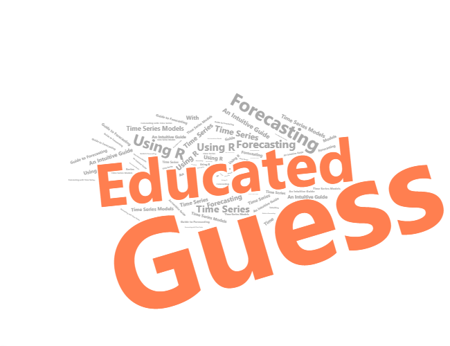

What is forecast if not a guess? An educated guess, nonetheless. A good forecast doesn’t need to be precise. It almost never is, only if by fluke. An imprecise guess can be of value to a forecaster. That we were unable to exactly predict an event, tells us something about the underlying processes that result in an outcome different from what we predicted. Such conjecture can be useful. Forecasting, even if inaccurate, can be useful. George Box’s ‘all models are wrong but some are useful’ is certainly suitable for the study of forecasting.
Our inability to make perfect forecasts is best summarized in a quote typically attributed to Niels Bohr:1 The exact origin of this saying, or its variant, is somewhat murky. It appears to have been adopted from a Danish proverb. ‘it is difficult to make predictions, especially about the future.’ I came across this quote as I was wrapping up my doctoral dissertation at Purdue University. The title of my dissertation was ‘Nonlinear Multivariate Modeling and Forecasting of Commodity Prices.’ A chapter of my dissertation, which was largely a forecasting exercise, yielded the so-called null result. I felt uneasy about it. I had an urge to justify, somehow, this null result. And then I stumbled across this quote, which ‘saved my day.’ I stuck it as an epigraph of my dissertation. It captured my struggles as an aspiring forecaster, gave my advisor, Matt Holt, a chuckle, and provided a context to the results of my work.
Some years later, I started teaching a course on economic forecasting. As I introduce the subject, I tend to spend a great deal of time explaining—indeed preparing students for the inevitable—that forecasting is difficult, and that more often than not we will not be able to give accurate forecasts. But this should not discourage us from trying, I also stress, because most great achievements have myriads of failed attempts as a foundation. And in any case, a forecast—however inaccurate—is a successful outcome of a thought process directed toward achieving the impossible—making a perfect guess about the unknown.
This book consists of two parts. In the first part, it introduces econometric models designed to analyse time series with a specific focus on the use of these models in predicting future realizations of the data. In the second part, the book presents tutorials—that, usually, complement the relevant chapter from the first part—to facilitate hands-on experience in performing necessary coding in R to obtain forecasts from time series models in consideration. The primary aim of this book is to achieve a better understanding and develop intuition on basic principles of time series modeling and forecasting, on the one hand, and coding in R, on the other hand.
Page built: 2022-10-29 using R version 4.1.2 (2021-11-01)